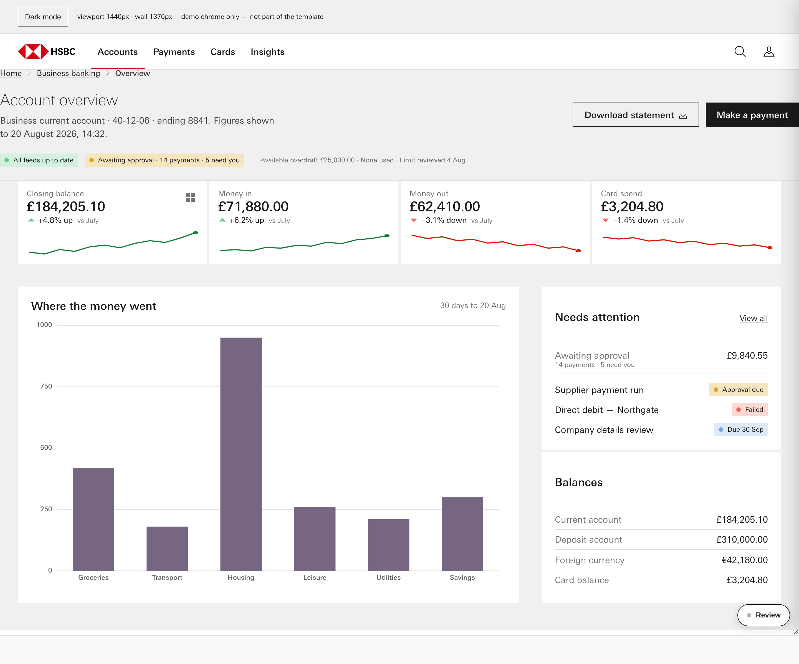
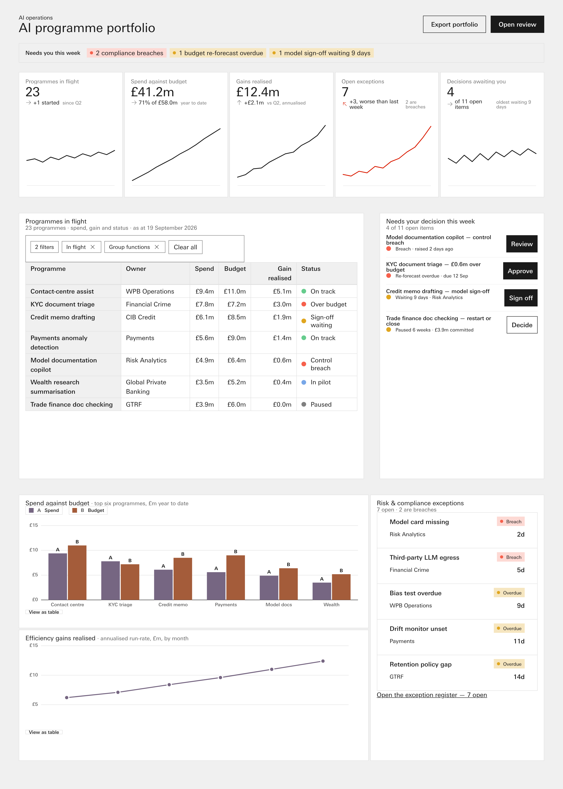

Left: the TRACED result already in the tree. Right: a page composed for the same brief from the design system's atoms and the graph's rules, with the template fenced — never opened, never grepped. Both rendered headless at a 1440 px wall, Mono, light. No verdict is offered here. Dave rules by eye.
_memento_search "cold-start acceptance W-304", the #229 cold-start
brief, the #230 demo-day brief, the #258 demo-fence brief, and a repo-wide grep) — the
briefs describe the test, none carries its text. The fallback in the lane brief was used:
"Build an operations dashboard for a bank's Chief AI Officer: AI programmes in flight,
their spend against budget, efficiency gains realised, risk and compliance exceptions, and
what needs a decision this week. Desktop first, 1440 wide."
The traced page was built at an earlier session against its own brief, so the two pages
answer DIFFERENT briefs. That is a limit on the comparison and is stated, not hidden.
showroom/template-dashboard-bento.html
notes/_lanes/288/P/composed-dashboard.htmlknowledge/snippets/*,
knowledge/canon/canon.css + type.css,
knowledge/tokens/* and the rulings. Wall 1440 px ×
2016 px.

Every number below was read out of the live DOM at 1440 px with
getComputedStyle / querySelectorAll, not from source. Labelled
measured.
| Measure | A · traced | B · composed |
|---|---|---|
| Wall width × document height (px) | 1440 × 1197 | 1440 × 2016 |
.c-bento instances | 4 | 3 |
| Top-level tiles in the dashboard wall | 3 | 4 |
Total .c-bento__tile count | 10 | 12 |
| Computed outer gutter between top-level tiles column-gap / row-gap on the wall's own grid |
40px / 40px | 40px / 40px |
Distinct canon components used, by .cn-* class name in the DOM |
0 the page carries no .cn-* component scope at all — its markup and CSS are its own |
11cn-button · cn-card-header-lockup ·
cn-chart-bar · cn-chart-line · cn-kpi-tile · cn-legend · cn-list-items ·
cn-page-header-lockup · cn-status-indicator · cn-table · cn-tags |
| Heading levels present | h1 × 1, h3 × 3 no h2 — the level is skipped |
h1 × 1, h2 × 6 |
<svg> elements | 17 | 16 |
<table> elements | 0 | 3 |
| Theme carriers on the root canon: Mono is the BASE store — the themes registry says "Mono = base, no block emitted", so no [data-apollo-theme="mono"] rule exists |
data-theme="light"data-apollo-theme="mono"
(inert — no such block in canon.css) |
class="canon"data-theme="light"
(no apollo-theme attribute = Mono) |
| Custom properties referenced in the page's own source | 82 | 23 |
| …of those, resolving to nothing on the root element
⚠ NOT a defect count. A var legitimately scoped to a component ( --bento-gutter on .c-bento, --data-grid inside a
chart scope) is empty at the root by design. Read it as how much of each page's
vocabulary is component-scoped rather than page-scoped. |
73 of 82 incl. --bento-columns,
--bento-gutter, --bento-packing,
--bento-caption-space, --axis-alpha |
3 of 23--baseline,
--data-axis, --data-grid — all three are dataviz vars
declared inside the chart component scopes |
| Uncaught page errors at load | 0 | 0 |
Quoted verbatim. The traced page was not gated by this lane — gating it would have meant reading it.
| Gate | Verdict, verbatim |
|---|---|
_validate_screen.pythe composed-screen pipeline; takes a path, ran on this file |
verdict: PASS ✅receipt: ✅ 0 region(s) re-hashed and matchedUNPROVEN:retrievalSet — null (rC Q4, the retrieval-set membership marker, is OPEN and was not invented here); a ruled membership marker carried in the receipt would prove which retrieval set the page was built fromcompose: ✅ · icon-source: ✅ all paths library-matched · a11y: ✅ |
_validate_composition.py |
UNPROVEN: the artefact declares neither a base column count nor any @container band; C9 cannot read its grammar_validate_composition: UNPROVEN (notes/_lanes/288/P/composed-dashboard.html) - C9 reds 0 [BLOCKING] · C1 0 · C7 0 · C8 0 · C4 0 [advisory] · unproven 1 |
_validate_compose.py |
RESULT: PASS ✅ — but this verdict is NOT about this
page. The gate ignores a path argument and scans a fixed set of seven
*.canon.html screens. Recorded so the PASS is not read as evidence. |
check-against-design-systemthe pack's own skill — guidance, applied by hand to its own procedure |
0 blockers · 4 warnings · PASS — no invented components, no invented variants,
no invented tokens, no raw hex; four warnings, all of them gaps in the system rather
than drift in the page. |
_validate_dataviz.py · _validate_binds_resolve.py ·
_validate_a11y.py (standalone) |
OUT OF SCOPE — each discovers its own corpus
(knowledge/snippets/*.reference.html,
knowledge/_proforma/*.html) and has no path argument. The a11y and
icon-source checks DID run on this page, inside _validate_screen.py. |
Every repo file this lane opened, logged in order in
notes/_lanes/288/P/READS.log (39 entries). Fenced files read:
none.
| Directory | Reads | What for |
|---|---|---|
knowledge/snippets/ | 12 | component markup — Kpi-tile, Stat-card, Table, Status-indicator, Tags, Progress-bar, Page-header-lockup, Card-header-lockup, Button, Chart-bar, List-items, Legend |
knowledge/canon/ | 8 | canon.css (theme mechanism, bento contract, component scopes), type.css, dv-render.js, dv-behaviour.js, dv-render-bar/line.js, dv-legend.js, gen_theme_cascade.py |
knowledge/tokens/ | 3 | layout.json (bento group), themes/ listing, themes/_themes.json |
knowledge/_render/ | 3 | role_defaults_219.py --table, _bento_edit_rails.json, seat_env.sh (read, not edited) |
notes/_briefs/ | 3 | hunting the frozen demo prompt (not found) |
knowledge/ (root files) | 3 | _rulings.json, _memento_search.py, gates |
reviews/ | 1 | DASHBOARD-PRINCIPLES — tag-stripped extract of the DP-01…29 statements only |
designer-skills-v1/ | 3 | README, generate-from-canon, check-against-design-system |
_DECISION-HISTORY/ | 1 | prompt hunt |
knowledge/_screen-gate/ | 1 | the gate's own output on this page, read back |
Decisions written down while composing:
49 numbered entries in notes/_lanes/288/P/DECISIONS.md —
39 design decisions, each with the ruling, principle or token it rests on (or marked
"designer's call"), and 10 gaps the system could not supply.
.c-bento.my-wall{…}",
because the role rules "are (0,2,0)". But the rule that restores the outer gutter for a
bento-of-bentos is .c-bento[data-bento-role="dashboard"]:has(> .c-bento__grid > .c-bento),
which :has() lifts to (0,4,0). Measured: a bare
.c-bento.wall-ops{--bento-gutter:40px} had no effect and the wall rendered at
the Mono base 0 px, not s219-D1(5)'s mainSpacing of 40. The dial only lands when it
repeats the :has().
layout.json says columns are "per-instance overridable via
--bento-columns — that is how a nested bento carries its own parameter set".
But the compiled bands re-declare --bento-cols-now on the grid at
≤1100 / ≤820 / ≤520, and they answer the WALL, not the window.
Measured: a 1-column inner wall 896 px wide rendered as 3 columns. On a
1440-wide dashboard every inner wall is under 1100 unless it spans all six columns, so the
per-instance column dial is only reachable for full-width inner walls.
Lane P, session #288, 2026-09-19. Renders: headless Chrome for Testing
153.0.8010.12 at device-scale 2, HSBC Univers faces resolved (10/10 in the farm),
goto(file://…), never set_content.